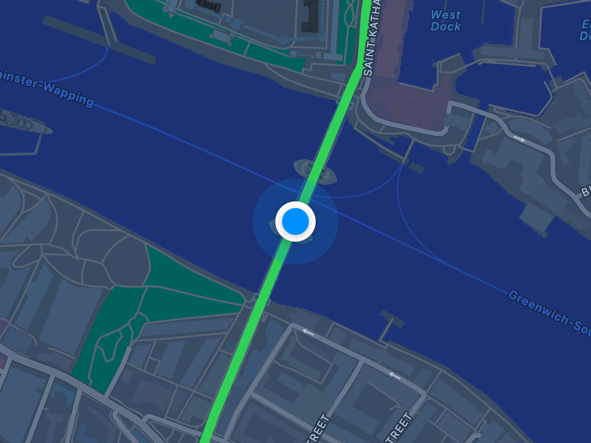
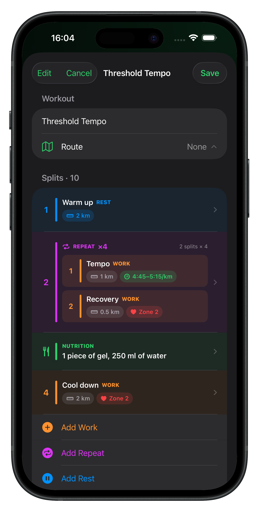
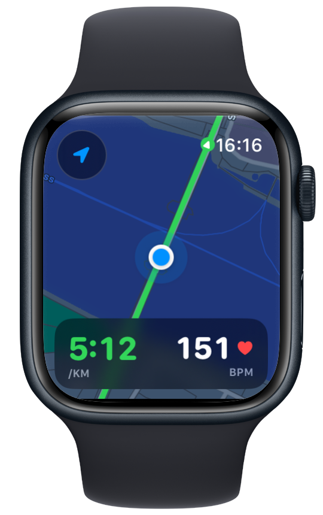
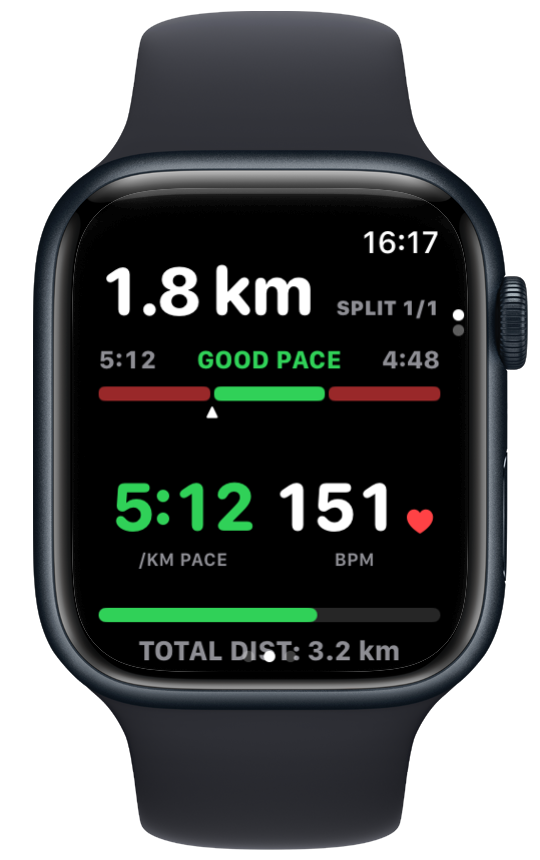

Vanoor - Apple Watch-first Running
A clean, premium running app that combines Apple Workout simplicity with GPX navigation, configurable run screens, structured intervals, and race pacing.
Problem
Apple Watch is capable running hardware, but runners who need GPX route guidance, structured intervals, configurable metrics, or race pacing often have to choose between Apple's simple interface and dense third-party power-user apps. The experience becomes fragmented across route tools, workout builders, activity history, and export utilities.
Goal
Build the running app Apple could have shipped: focused, reliable, HealthKit-native, and intentionally non-social. It should help a runner prepare and execute a session well without accounts, feeds, coaching noise, or a subscription-first experience.
Approach and features
Plan on iPhone, execute on Watch
The iPhone app manages imported GPX routes and structured workouts. Work, rest, and repeat blocks can use distance or time extents with pace, heart-rate-zone, or heart-rate-range targets, then sync to the Watch for focused execution.

Route guidance without cockpit clutter
The Watch map overlays GPX progress, live position, and the remaining route on Apple Maps. A follow mode recentres after manual exploration, while an offline OSM option is designed for no-phone and trail use.

Pacing, cues, and native activity history
A split engine advances targets automatically, shows remaining distance or time, and uses haptics for transitions and configurable pace, heart-rate, and distance cues. Completed sessions are saved with their GPS route to Apple Health and can be reviewed with native charts or exported as FIT and GPX.

Architecture decisions
Shared Swift domain models keep routes, workout structures, pacing logic, settings, and transfer envelopes consistent between iPhone and Watch. WatchConnectivity sends structured, checksummed data; the Watch expands repeat blocks only at the execution boundary. HealthKit owns workout recording, CloudKit extends an offline-first local route library, and platform-native SwiftUI, MapKit, Swift Charts, StoreKit, and haptics keep the system close to Apple's reliability model.
Engineering challenges
The hardest work sits at system boundaries: preserving route progress on loops and self-crossings, keeping background GPS resilient through screen-off runs and transient failures, fitting readable controls onto a Watch, synchronizing editable hierarchical workouts across devices, and supporting offline map tiles within provider and storage constraints. Pure route, split, encoding, and merge logic is isolated for unit testing; device-dependent HealthKit and location behaviour still requires real-hardware validation.
Result and current state
Felix is building and engineering the native iPhone and Apple Watch product end to end. The current app includes route import and sync, structured workouts with repeat blocks, live maps and pacing, HealthKit recording and history, FIT/GPX export, configurable screens, cues, and an offline-first route library. The remaining release work is deliberately concrete: complete the real-device test matrix, validate long background runs and hardware-dependent metrics, and finish production service configuration.
Public link
Product website: vanoor.app